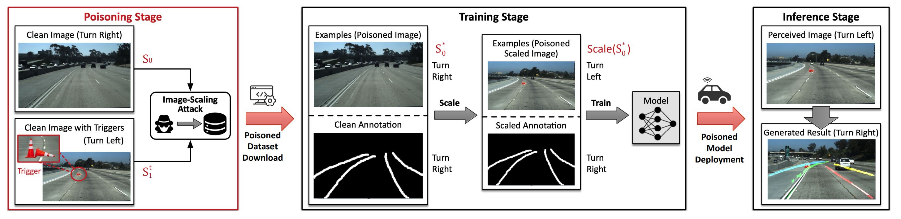
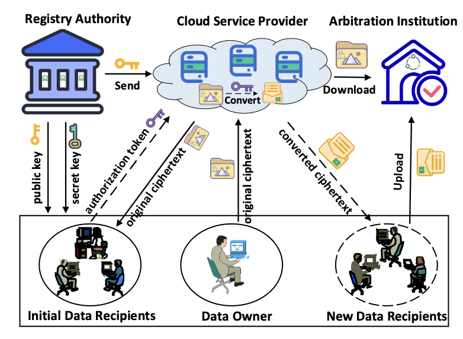
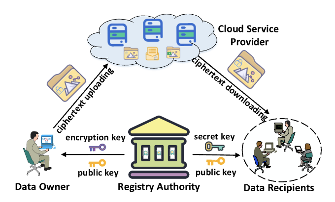
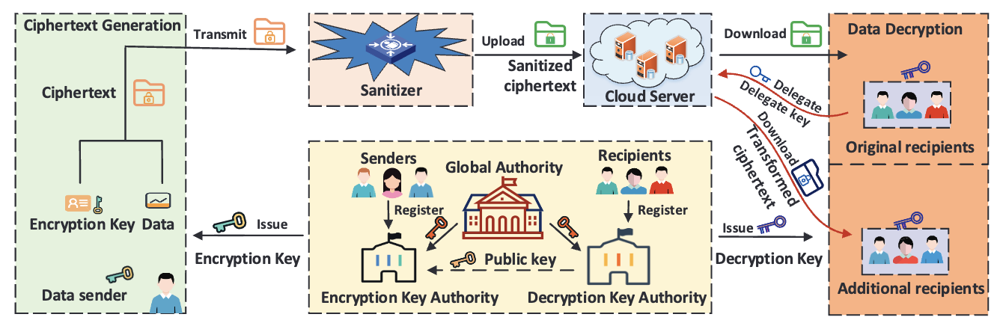

|
Xuehuan Yang
Hands-on experience across Singapore’s key smart mobility deployments, including NTU–Volvo–LTA autonomous bus, AV localization research, SingPilot robotics, and PSA port automation.
s190113@e.ntu.edu.sg
github
cv
|
|
Projects
2025 Participated with AI Self-Directed Solutions for Mobility Automation at PSA Pasir Panjiong
Terminal, Singapore.
2024 Joined Singapore-based SingPilot autonomous robot localization and perception team
2023 Currently, I serve as an AI engineer responsible for overseeing and optimizing the operation of autonomous prime movers at the Singapore PSA port
2021 Before that I was a Research Associate in School of Computer Science and Engineering at Nanyang Technological University (NTU), Singapore .
2020 I worked as a research associate for Nanyang Technological University (NTU) in Singapore's School of Computer Science and Engineering. I had previously served as a research assistant in Prof. Yang Liu's group at Nanyang Technological University in Singapore
2019 Joined the NTU-Volvo-LTA 12-meter autonomous electric bus team and the Centre for Energy
Research Institute@NTU, Singapore's Future Mobility Team.
2019 Previously, I collaborated on a final year project (FYP) with Prof. Danwei Wang's IEEE Fellow team at Nanyang Technological University in Singapore.
2018 Collaborated with the Autonomous Vehicle Localization Team at the Centre for Autonomous
Robotics Lab in EEE at NTU, Singapore.
2017 I was a research intern under Associate Professor Yilin Mo team, Department of Robot and Automation, Nanyang Technological University in Singapore
|
|
Research
Research interests include adversarial robustness, object tracking, and computer vision security for autonomous driving systems.
|
|

|
Physical Backdoor Attacks to Lane Detection Systems in Autonomous Driving
Xingshuo Han, Guowen Xu, Yuan Zhou, Xuehuan Yang ,Jiwei Li, Tianwei Zhang
ACMMM, 2022 (CCF-A)
paper /
demo
|
|

|
Verifiable, Fair and Privacy-preserving Broadcast Authorization for Flexible Data Sharing in
Clouds
Jianfei Sun, Guowen Xu, Tianwei Zhang, Xuehuan Yang , Mamoun Alazab, Robert Deng
TIFS, 2022 (CCF-A)
paper
|
|

|
Privacy-Aware and Security-Enhanced Efficient Matchmaking Encryption
Jianfei Sun, Guowen Xu, Tianwei Zhang, Xuehuan Yang , Mamoun Alazab, Robert Deng
TIFS, 2023 (CCF-A)
paper
|
|

|
Sanitizable Cross-domain Access Control with Policy-driven Dynamic Authorization
Jianfei Sun, Guowen Xu, Hongwei Li, Tianwei Zhang, Cong Wu, Xuehuan Yang , Robert Deng
TDSC, 2023 (CCF-A)
paper
|
|
Education
2020-2022 Master of School of Computer and Science Engineering(SCSE), Nanyang Technological
University, Singapore
Thesis: Simulation Based Perception Testing for Autonomous Vehicles
10356/154942
2016-2020 Bachelor of School of Electrical and Electronic Engineering(EEE), Nanyang Technological
University, Singapore
Graduate with Honours (Distinction)
Thesis: Interfacing and Testing of Localization Sensors on An Autonomous Vehicle 10356/136704
|
|
Award
2024 Certified International Inline Skating Coach under Sport Singaore
2022 MOE-Recognized Instructor
2022 International Driving License Class 5
2022 International Driving License Class 4
2019 Leader, NTU Inline Skating CCA Club
2018 Coach, NTU Inline Skating CCA Club
2016 Inline Certificate Program Level One Instructor
2015 International Driving License Class 3
2012 3rd Prize, Chinese Chemical Olympiad Hosted by Anhui Province
2011 Merit Student for Academic Excellence Award, Hefei High School
2010 3rd Prize, Chinese Mathematics Olympiad (CMO) hosted by the Chinese National High School Mathematics League
|
|